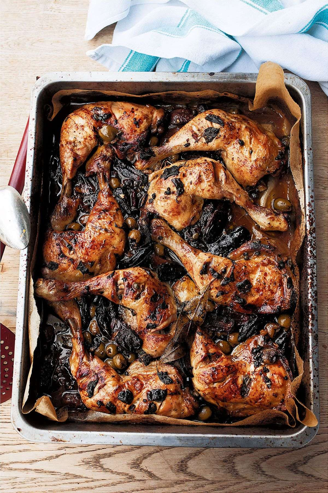

<!DOCTYPE html>
<html lang="en">
<head>
<meta charset="UTF-8">
<meta name="viewport" content="width=device-width, initial-scale=1">
<meta name="robots" content="noindex, nofollow">
<title>Chicken Marbella</title>
<link rel="preconnect" href="https://fonts.googleapis.com">
<link rel="preconnect" href="https://fonts.gstatic.com" crossorigin>
<link href="https://fonts.googleapis.com/css2?family=Inter:wght@400;500;600;700&display=swap" rel="stylesheet">
<style>
:root{ --bg4:#14171C; --surf:#1E2229; --ink4:#F2F0E9; --sub4:#8D93A0; --accent4:#E4A93A; --line4:#2B303A; }
*{box-sizing:border-box;}
html,body{margin:0;padding:0;}
body{max-width:560px;margin:0 auto;background:var(--bg4); color:var(--ink4); font-family:'Inter',sans-serif; padding-bottom:60px;}
img{max-width:100%;}
.head{position:sticky;top:0;background:var(--bg4);z-index:5;padding:20px 18px 14px;border-bottom:1px solid var(--line4);}
.title{font-size:22px;font-weight:700;line-height:1.2;margin:0 0 4px;text-wrap:balance;}
.byline{font-size:12.5px;color:var(--sub4);margin:0 0 12px;}
.chips{display:flex;gap:8px;flex-wrap:wrap;}
.chip{background:var(--surf);border:1px solid var(--line4);border-radius:20px;padding:5px 11px; font-size:11px;color:var(--sub4);font-variant-numeric:tabular-nums;}
.chip b{color:var(--accent4);font-weight:600;}
.body{padding:18px;}
.photo{width:100%;border-radius:14px;margin:0 0 18px;display:block;border:1px solid var(--line4);}
.lede{font-size:13.5px;color:var(--sub4);line-height:1.6;margin:0 0 22px;}
h2{font-size:11px;letter-spacing:.1em;text-transform:uppercase;color:var(--accent4);margin:0 0 10px;}
.ing-group-heading{font-size:12.5px;font-weight:600;color:var(--ink4);margin:16px 0 4px;}
.ing-group-heading:first-child{margin-top:0;}
.ing{list-style:none;margin:0 0 26px;padding:0;}
.ing li{display:flex;align-items:flex-start;gap:12px;padding:12px 4px;border-bottom:1px solid var(--line4); min-height:44px;}
.ing input{width:19px;height:19px;flex:0 0 auto;margin-top:2px;accent-color:var(--accent4);}
.ing label{font-size:14.5px;line-height:1.4;}
.ing input:checked + label{color:var(--sub4);text-decoration:line-through;}
.method{list-style:none;margin:0;padding:0;}
.method li{display:flex;gap:12px;background:var(--surf);border:1px solid var(--line4);border-radius:12px; padding:14px;margin:0 0 12px;}
.method .n{flex:0 0 auto;width:26px;height:26px;border-radius:50%;background:var(--accent4);color:#14171C; font-weight:700;font-size:13px;display:flex;align-items:center;justify-content:center;}
.method p{margin:2px 0 0;font-size:14px;line-height:1.55;}
.notes{background:var(--surf);border:1px solid var(--line4);border-left:3px solid var(--accent4);border-radius:8px; padding:12px 14px;margin:0 0 8px;font-size:13px;line-height:1.55;color:var(--sub4);}
.notes b{color:var(--ink4);}
.head{padding-right:64px;}
.fav{position:absolute;top:18px;right:16px;width:34px;height:34px;border-radius:50%;border:1px solid var(--line4);background:var(--surf);color:var(--sub4);display:flex;align-items:center;justify-content:center;padding:0;cursor:pointer;-webkit-tap-highlight-color:transparent;}
.fav svg{width:18px;height:18px;fill:none;stroke:currentColor;stroke-width:2;stroke-linejoin:round;}
.fav[aria-pressed="true"]{color:var(--accent4);}
.fav[aria-pressed="true"] svg{fill:currentColor;}
</style>
</head>
<body>
<div class="head">
<button class="fav" type="button" aria-label="Add to favourites" aria-pressed="false"><svg viewBox="0 0 24 24" aria-hidden="true"><path d="M12 2.8l2.8 5.8 6.3.9-4.6 4.4 1.1 6.3L12 17.2l-5.6 3 1.1-6.3-4.6-4.4 6.3-.9z"/></svg></button>
<p class="title">Chicken Marbella</p>
<p class="byline">Yotam Ottolenghi</p>
<div class="chips"><span class="chip">Serves <b>4 generously</b></span></div>
</div>
<div class="body">

<p class="lede">This is a dish I regularly cook for friends. All the work is done in advance – you can marinate it for up to 2 days in the fridge – and then it’s just into the baking tray and into the oven when you’re ready. The chicken loves the long marination but it can also be cooked straight away, if you don’t have the time. If you’re going to do this, just season the chicken with the teaspoon of salt and pepper (which would otherwise go into the marinade), rub it thoroughly nto the skin before combining it with the rest of the marinade ingredients (no more salt required) and bake according to the recipe. I like to use chicken legs but others prefer chicken supremes, on the bone, which also work very well. Thanks to Julee Rosso and Sheila Lukins’s The Silver Palate, whose recipe for Chicken Marbella inspired this recipe.</p>
<h2>Ingredients — tap to check off</h2>
<ul class="ing"><li><input type="checkbox" id="chicken-marbella-i1"><label for="chicken-marbella-i1">8 chicken legs, drumstick and thigh attached, skin on and scored 3 or 4 times to the bone (2kg)</label></li><li><input type="checkbox" id="chicken-marbella-i2"><label for="chicken-marbella-i2">5 garlic cloves, crushed</label></li><li><input type="checkbox" id="chicken-marbella-i3"><label for="chicken-marbella-i3">15g fresh oregano, picked, plus extra to serve</label></li><li><input type="checkbox" id="chicken-marbella-i4"><label for="chicken-marbella-i4">3 tbsp red wine vinegar</label></li><li><input type="checkbox" id="chicken-marbella-i5"><label for="chicken-marbella-i5">3 tbsp olive oil</label></li><li><input type="checkbox" id="chicken-marbella-i6"><label for="chicken-marbella-i6">100g pitted green olives</label></li><li><input type="checkbox" id="chicken-marbella-i7"><label for="chicken-marbella-i7">60g capers, plus 2 tbsp of their juices</label></li><li><input type="checkbox" id="chicken-marbella-i8"><label for="chicken-marbella-i8">120g Medjool dates, pitted and quartered lengthways</label></li><li><input type="checkbox" id="chicken-marbella-i9"><label for="chicken-marbella-i9">2 bay leaves</label></li><li><input type="checkbox" id="chicken-marbella-i10"><label for="chicken-marbella-i10">120ml dry white wine</label></li><li><input type="checkbox" id="chicken-marbella-i11"><label for="chicken-marbella-i11">1 tbsp date molasses (or treacle)</label></li><li><input type="checkbox" id="chicken-marbella-i12"><label for="chicken-marbella-i12">salt and black pepper</label></li></ul>
<h2>Method</h2>
<ol class="method" style="list-style:none;"><li><span class="n">1</span><p>Place the chicken in a large, non-reactive bowl and add all of the remaining ingredients, apart from the wine and date molasses, along with 1 teaspoon of salt and a good grind of black pepper. Gently mix everything together, cover the bowl and leave in the fridge to marinate for 1–2 days, stirring the ingredients a few times during the process.</p></li><li><span class="n">2</span><p>Preheat the oven to 180°C fan.</p></li><li><span class="n">3</span><p>Spread the chicken legs out on a high-sided medium baking tray, along with all the marinade ingredients. Whisk together the wine and molasses and pour over the meat. Place in the oven and cook for 50 minutes, basting two or three times, until the meat is golden-brown on top and cooked through.</p></li><li><span class="n">4</span><p>Remove from the oven, transfer everything to a large platter, sprinkle over some freshly picked oregano leaves and serve.</p></li></ol>

</div>
<script>
try {
  (function(){
    var KEY = 'recipe-favourites';
    var btn = document.querySelector('.head .fav');
    var file = decodeURIComponent(location.pathname.split('/').pop()).normalize('NFC');
    function load(){ try { return JSON.parse(localStorage.getItem(KEY) || '[]').map(function(f){ return f.normalize('NFC'); }); } catch (e) { return []; } }
    function show(on){
      btn.setAttribute('aria-pressed', on ? 'true' : 'false');
      btn.setAttribute('aria-label', on ? 'Remove from favourites' : 'Add to favourites');
    }
    show(load().indexOf(file) !== -1);
    btn.addEventListener('click', function(){
      var list = load(), i = list.indexOf(file);
      if (i === -1) list.push(file); else list.splice(i, 1);
      try { localStorage.setItem(KEY, JSON.stringify(list)); } catch (e) {}
      show(i === -1);
    });
  })();
} catch (e) {}
</script>
<script>
try {
  document.querySelectorAll('.ing input[type="checkbox"]').forEach(function(box){
    var key = 'recipe-chicken-marbella-' + box.id;
    box.checked = localStorage.getItem(key) === '1';
    box.addEventListener('change', function(){ localStorage.setItem(key, box.checked ? '1' : '0'); });
  });
} catch (e) {}
</script>
<!-- source: Yotam Ottolenghi - Chicken Marbella.pdf -->
</body>
</html>
